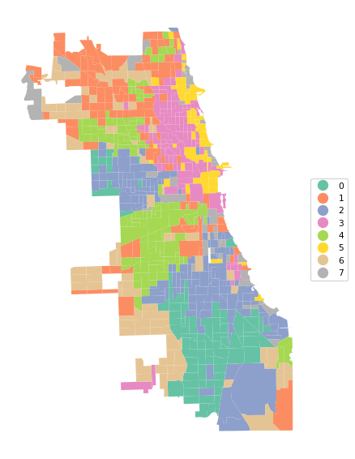
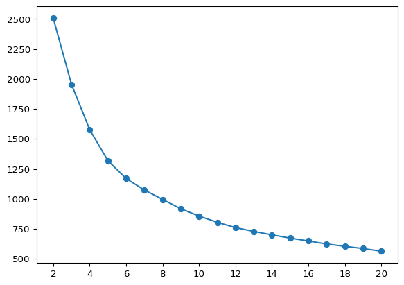
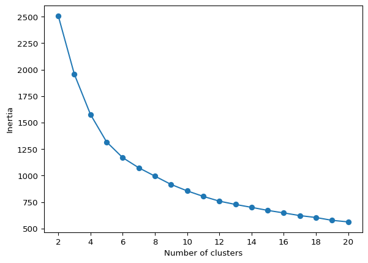
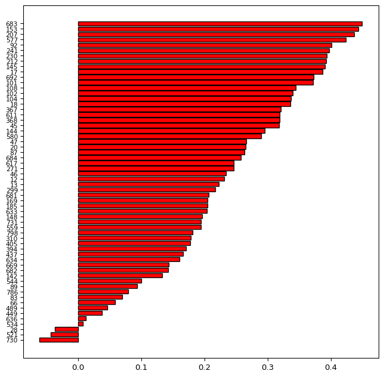
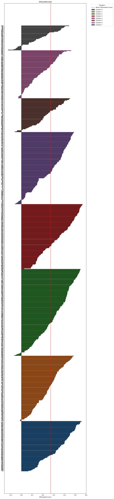

import pandas as pd
import geopandas as gpd
import numpy as np
import matplotlib.pyplot as plt
from sklearn.cluster import KMeans
from sklearn.preprocessing import StandardScaler
from sklearn.metrics import silhouette_samples, silhouette_score
from sklearn.decomposition import PCA
from spatial_cluster_helper import ensure_datasets, cluster_stats, \
cluster_map, cluster_center, \
cluster_fit, elbow_plot, plot_silhouette8 Partitioning Clustering Methods
This Chapter considers partitioning clustering methods as the second broad category of techniques, with a particular focus on K-Means. K-Means is a partitioning clustering method that starts with an initial solution and moves forward by means of iterative relocation to find a better solution. The objective function is to find an allocation (an encoding) of each observation to one of the \(k\) clusters that minimizes the within cluster dissimilarity (or, maximizes the between cluster dissimilarity). This corresponds to the sum of squared deviations from the mean in each cluster, i.e., the within sum of squared errors. The material is discussed in detail in Chapter 6 of the GeoDa Cluster Book.
The K-Means algorithm is implemented in the KMeans class of sklearn.cluster. As before, to carry out variable standardization we will use StandardScaler from sklearn.preprocessing. To characterize the solution in K-Means, we also apply silhouette_samples and silhouette_score from sklearn.metrics. The specific illustration will implement K-Means clustering on principal components, for which we will again use PCA from sklearn.decomposition, as in Chapter 5. We will require numpy, geopandas and matplotlib.pyplot as well.
Finally, to implement some of the spatialization of these methods, we import several functions from the spatial-cluster-helper package:
ensure_datasetscluster_statscluster_mapcluster_centercluster_fitelbow_plotplot_silhouette
To illustrate K-Means clustering, we will use the same Chi-SDOH sample data set as in Chapter 3.
Required Packages
numpy, geopandas, matplotlib.pyplot, sklearn.cluster, sklearn.preprocessing, sklearn.decomposition, sklearn.metrics, spatial-cluster-helper
Required Data Sets
Chi-SDOH
8.1 Preliminaries
8.1.1 Import Required Modules
8.1.2 Load Data
The data are read from the Chicago_SDOH.shp shape file. As usual, we carry out a quick check of the contents.
# Setting working folder:
#path = "/your/path/to/data/"
path = "./datasets/"
# Select the Chicago census tract data:
shpfile = "Chi-SDOH/Chi-SDOH.shp"
# Load the data:
ensure_datasets(shpfile, folder_path = path)
dfs = gpd.read_file(path + shpfile)
print(dfs.shape)
dfs.head(3)(791, 56)| OBJECTID | Shape_Leng | Shape_Area | TRACTCE10 | geoid10 | commarea | ChldPvt14 | EP_CROWD | EP_UNINSUR | EP_MINRTY | ... | ForclRt | EP_MUNIT | EP_GROUPQ | SchHP_Mi | BrownF_Mi | card | cpval | COORD_X | COORD_Y | geometry | |
|---|---|---|---|---|---|---|---|---|---|---|---|---|---|---|---|---|---|---|---|---|---|
| 0 | 1 | 22777.477721 | 2.119089e+07 | 842400.0 | 1.703184e+10 | 44.0 | 30.2 | 2.0 | 18.6 | 100.0 | ... | 0.0 | 6 | 0.0 | 0.323962 | 0.825032 | 0.0 | 0.0 | 1176.183467 | 1849.533205 | POLYGON ((1177796.742 1847712.428, 1177805.261... |
| 1 | 2 | 16035.054986 | 8.947394e+06 | 840300.0 | 1.703184e+10 | 59.0 | 38.9 | 4.8 | 25.2 | 85.9 | ... | 0.0 | 2 | 0.0 | 2.913039 | 0.833580 | 0.0 | 0.0 | 1161.787888 | 1882.078567 | POLYGON ((1163591.927 1881471.238, 1163525.437... |
| 2 | 3 | 15186.400644 | 1.230614e+07 | 841100.0 | 1.703184e+10 | 34.0 | 40.4 | 4.9 | 32.1 | 95.6 | ... | 0.0 | 42 | 0.1 | 1.534987 | 0.245875 | 0.0 | 0.0 | 1174.481923 | 1889.069999 | POLYGON ((1176041.55 1889791.988, 1176042.377 ... |
3 rows × 56 columns
# the full set of variables
print(list(dfs.columns))['OBJECTID', 'Shape_Leng', 'Shape_Area', 'TRACTCE10', 'geoid10', 'commarea', 'ChldPvt14', 'EP_CROWD', 'EP_UNINSUR', 'EP_MINRTY', 'Ovr6514P', 'EP_AGE17', 'EP_DISABL', 'EP_NOHSDP', 'EP_LIMENG', 'EP_SNGPNT', 'Pov14', 'EP_PCI', 'Unemp14', 'EP_NOVEH', 'FORCLRISK', 'HealthLit', 'CarC14P', 'CAR', 'NOCAR', 'CTA14P', 'CTA', 'CmTm14', 'Undr514P', 'Wht14P', 'WHT50PCT', 'Wht', 'Blk14P', 'BLCK50PCT', 'Blk', 'Hisp14P', 'HISP50PCT', 'Hisp', 'Pop2014', 'PDENS14', 'MEANMI_07', 'MEANMI_11', 'MEANMI_14', 'FACHANGE', 'PCRIMERT15', 'VCRIMERT15', 'ForclRt', 'EP_MUNIT', 'EP_GROUPQ', 'SchHP_Mi', 'BrownF_Mi', 'card', 'cpval', 'COORD_X', 'COORD_Y', 'geometry']8.1.3 Variables
As in Chapter 6 of the GeoDa Cluster Book, we select variables that are a close match to the variables identified in Kolak et al. (2020) for an analysis that includes all U.S. census tracts. However, unlike what is the case in Chapter 7, the observations here are for census tracts and not for Community Areas. We select 16 variables:
| Column Name | Description |
|---|---|
| EP_MINRTY | Minority population share |
| Ovr6514P | Population share aged > 65 |
| EP_AGE17 | Population share aged < 18 |
| EP_DISABL | Disabled population share |
| EP_HOHSDP | No high school |
| EP_LIMENG | Limited English proficiency |
| EP_SNGPNT | Percentage of single parent households |
| Pov14 | Poverty rate |
| EP_PCI | Per capita income |
| Unemp14 | Unemployment rate |
| EP_UNINSUR | Percent without health insurance |
| EP_CROWD | Percent crowded housing |
| EP_NOVEH | Percent without a car |
| ChldPvt14 | Child poverty rate |
| HealthLit | Health literacy index |
| FORCLRISK | Foreclosure risk |
As in the previous chapter, we start by creating a list with the respective variables names, varlist, and obtain a subset of the full data set for just these variables, as data_cluster. We compute some simple descriptive statistics by applying the describe method to this data set. The results are rounded to two decimals.
varlist = ['EP_MINRTY', 'Ovr6514P', 'EP_AGE17', 'EP_DISABL',
'EP_NOHSDP', 'EP_LIMENG', 'EP_SNGPNT', 'Pov14',
'EP_PCI', 'Unemp14', 'EP_UNINSUR', 'EP_CROWD',
'EP_NOVEH', 'ChldPvt14', 'HealthLit', 'FORCLRISK']
data_cluster = dfs[varlist]
np.round(data_cluster.describe(), 2)| EP_MINRTY | Ovr6514P | EP_AGE17 | EP_DISABL | EP_NOHSDP | EP_LIMENG | EP_SNGPNT | Pov14 | EP_PCI | Unemp14 | EP_UNINSUR | EP_CROWD | EP_NOVEH | ChldPvt14 | HealthLit | FORCLRISK | |
|---|---|---|---|---|---|---|---|---|---|---|---|---|---|---|---|---|
| count | 791.00 | 791.00 | 791.00 | 791.00 | 791.00 | 791.00 | 791.00 | 791.00 | 791.00 | 791.00 | 791.00 | 791.00 | 791.00 | 791.00 | 791.00 | 791.00 |
| mean | 69.55 | 10.74 | 22.60 | 11.26 | 19.20 | 7.84 | 13.00 | 20.13 | 27956.98 | 15.57 | 18.48 | 4.76 | 26.89 | 31.10 | 242.53 | 23.49 |
| std | 30.27 | 6.02 | 8.54 | 5.54 | 13.58 | 9.86 | 9.79 | 14.78 | 19592.21 | 10.09 | 9.05 | 4.80 | 14.86 | 22.36 | 14.58 | 23.77 |
| min | 6.20 | 0.70 | 1.10 | 0.40 | 0.00 | 0.00 | 0.00 | 0.00 | 3077.00 | 0.60 | 1.00 | 0.00 | 0.00 | 0.00 | 125.86 | 0.20 |
| 25% | 42.00 | 6.50 | 17.55 | 7.10 | 8.90 | 0.00 | 5.10 | 7.65 | 14679.00 | 7.90 | 11.70 | 1.05 | 15.00 | 11.55 | 234.16 | 5.54 |
| 50% | 80.80 | 9.50 | 23.30 | 10.20 | 17.40 | 3.00 | 11.10 | 17.80 | 21216.00 | 13.00 | 17.90 | 3.30 | 24.20 | 29.80 | 245.16 | 13.56 |
| 75% | 97.90 | 13.60 | 28.45 | 15.35 | 27.50 | 14.00 | 19.20 | 29.95 | 33835.50 | 20.70 | 24.45 | 7.05 | 37.85 | 48.20 | 252.58 | 30.84 |
| max | 100.00 | 47.00 | 50.70 | 34.40 | 65.40 | 47.00 | 56.50 | 73.10 | 127743.00 | 51.80 | 45.00 | 25.80 | 79.20 | 93.60 | 271.90 | 100.00 |
8.1.4 Standardization
Before proceeding further, we extract the number of observations and compute the scaling factor \(\sqrt{(n-1)/n}\) needed to replicate the results from GeoDa (see Chapter 7).
n = data_cluster.shape[0]
nn = np.sqrt((n-1.0)/n)8.2 Clustering with Dimension Reduction
In practice, when many variables are involved, it is often more efficient to carry out the clustering exercise after a dimension reduction. More specifically, the clustering is applied to the main principal components of the original variables.
We first transform the variables using StandardScaler. In order to retain compatibility with the results for GeoDa, we rescale those results by \(\sqrt{(n-1)/n}\) (the nn variable just created) and then apply the PCA().fit() method to create pca_res as the result object. The factor loadings are in the resulting components_ attribute of pca_res.
X0 = StandardScaler().fit_transform(data_cluster)
X1 = X0 * nn
pca_res = PCA().fit(X1)
pca_res.components_array([[ 0.33824863, -0.02767885, 0.29159216, 0.19532335, 0.28473044,
0.10177461, 0.3168122 , 0.32666508, -0.32245438, 0.28719305,
0.25713029, 0.22366353, 0.11580138, 0.31762617, -0.01704885,
0.21435943],
[-0.06920095, -0.32122211, 0.10745714, -0.36333146, 0.28673661,
0.49749526, -0.07628474, -0.10662782, -0.04344009, -0.25805376,
0.2914494 , 0.33241983, -0.29503893, -0.09891616, -0.0204966 ,
-0.20096159],
[ 0.12996788, 0.60193803, -0.07823625, 0.30737561, 0.1736577 ,
0.23359596, -0.21902106, -0.2687673 , -0.18572297, -0.05220259,
0.10643154, -0.03100825, -0.36802528, -0.20257751, 0.06986895,
0.29048044],
[-0.06484105, 0.19858591, -0.27120191, 0.19752884, 0.12097044,
0.1780976 , -0.16748035, 0.11172722, 0.06180415, -0.08390976,
0.16760664, 0.17480623, 0.49277773, 0.08114224, 0.54731901,
-0.37205383],
[-0.01771277, -0.15430746, 0.27237767, -0.12234097, -0.07065488,
-0.13099058, 0.10975812, -0.05803475, 0.02937634, 0.08607726,
-0.17815627, 0.01667127, -0.30711122, -0.01610845, 0.81831768,
0.21128788],
[ 0.15756767, -0.27192672, -0.49211235, -0.2640276 , -0.08233546,
-0.00680378, -0.24531422, -0.08693787, 0.04371917, 0.21192293,
0.39138329, -0.07029299, 0.15546542, 0.00915944, 0.07987495,
0.52839605],
[ 0.01710768, 0.14042738, 0.08052682, -0.06484484, 0.05513617,
-0.09825969, 0.05014743, -0.13348896, 0.32292809, -0.04858752,
-0.25859919, 0.71569002, 0.27523261, -0.22636103, -0.10216948,
0.33631691],
[-0.16928011, 0.27475708, -0.02465148, -0.25609387, 0.18292454,
0.24739228, -0.10725098, 0.32512576, 0.42180632, -0.07999192,
-0.19287099, -0.13646173, -0.12495858, 0.55518004, -0.0303803 ,
0.22996604],
[-0.00366352, -0.17391089, -0.1757881 , 0.33651032, -0.25661352,
-0.31037813, -0.28562529, 0.11156684, -0.10007061, -0.31050183,
0.06369376, 0.40983189, -0.35046234, 0.40884423, -0.03103305,
-0.0013363 ],
[-0.28616948, 0.30497287, 0.04181145, -0.25696408, -0.20205869,
-0.11617441, -0.16391205, 0.04675566, -0.04089465, 0.66793167,
0.20014968, 0.27524592, -0.20015627, 0.02827778, -0.05035372,
-0.25868787],
[-0.14025286, -0.39449529, -0.00575086, 0.3928861 , 0.46309684,
0.04619709, -0.40271685, -0.0020914 , 0.13575911, 0.40899255,
-0.30225178, -0.03112526, -0.06129094, -0.08418149, -0.04981699,
-0.0132952 ],
[ 0.11945958, -0.02109346, -0.07423843, 0.27807943, 0.07746011,
-0.11638656, 0.3777289 , -0.12652341, 0.68040839, 0.0816599 ,
0.41594474, -0.03565666, -0.24529279, -0.02160758, -0.0047099 ,
-0.14017415],
[ 0.65392971, 0.02857446, -0.41314791, -0.19960292, 0.03019588,
0.07188768, 0.09233702, 0.00192229, -0.01145205, 0.16188207,
-0.4171966 , 0.11025993, -0.20233042, 0.04403266, 0.02200409,
-0.30084813],
[ 0.49377496, 0.01040831, 0.53729337, -0.0248907 , -0.24908989,
0.05908971, -0.51860949, -0.10202386, 0.25115871, -0.00255258,
0.11041623, -0.09225063, 0.14637002, 0.07289198, -0.01903675,
-0.10480098],
[-0.10246771, -0.14452211, -0.04574585, 0.29993213, -0.58534793,
0.65843969, 0.16817894, -0.02235705, 0.06151077, 0.17480916,
-0.14577086, 0.07255365, 0.00221709, 0.02588026, -0.01670772,
0.09896415],
[ 0.08847644, 0.01348562, -0.02523972, 0.02229942, -0.10450118,
0.00886041, -0.11167941, 0.78815678, 0.10381648, -0.08261031,
0.06746452, -0.00240211, -0.14912046, -0.54632534, 0.01832656,
0.05467755]])The results match the values in Figure 6.12 of the GeoDa Cluster Book, except that the loadings on each principal component are represented by a row. The share of the explained variance is given by the explained_variance_ratio_ attribute. The cumulative share is then easily computed by means of numpy cumsum. The result reveals how the first four components explain 77.4% of the total variance.
np.cumsum(pca_res.explained_variance_ratio_)array([0.44343332, 0.61996478, 0.70615391, 0.77350516, 0.8348708 ,
0.8680793 , 0.894729 , 0.91510188, 0.9331911 , 0.94876398,
0.96125779, 0.97276386, 0.98239453, 0.98997297, 0.99598198,
1. ])The variance of each component is included in the explained_variance_ attribute. These are also the eigenvalues of \(X'X\). We use the Kaiser criterion and select the four principal components with an eigenvalue larger than one.
pca_res.explained_variance_array([7.09493309, 2.82450339, 1.37902613, 1.07761989, 0.98185035,
0.531336 , 0.42639517, 0.32596605, 0.28942756, 0.24916599,
0.19990103, 0.18409716, 0.15409062, 0.12125515, 0.09614416,
0.06428826])We will replicate the example in the GeoDa Cluster Book and carry out the clustering exercise on these four principal components. These are obtained by the transform method of pca_res, from which we extract the first four columns and turn them into a data frame. For the cluster analysis, we first need to standardize the principal components with StandardScaler. We also rescale them by nn to conform to the GeoDa results.
pca_vars = pca_res.transform(X1)[:, 0:4]
pca_df = pd.DataFrame(pca_vars, columns=["PC1", "PC2", "PC3", "PC4"])
XX = StandardScaler().fit_transform(pca_df)
X = XX * nn8.3 K-Means Principle
The iterative relocation principle that underlies K-Means computes a new set of cluster centers after each move and then allocates observations to their nearest center. This is the classic Lloyds algorithm, a special case of EM (expectation, maximization). It stops when no further improvement is possible, but this does not guarantee that a global optimum is reached. In fact, the algorithm can easily get stuck in local optima. For mathematical details, see Chapter 6 of the GeoDa Cluster Book.
A critical aspect of this process is the initial starting solution. Since all further moves proceed from this initial assignment, the end result critically depends on it. To address this sensitivity, typically several different starting points are compared, each randomly generated.
We use sklearn.cluster.KMeans to illustrate this method. It works in the same way as the other scikit-learn methods: first an instance of the class is created, to which then a fit method is applied for the given data set (X). The default arguments for a KMeans instance are n_clusters = 8, for the number of clusters, init = "k-means++" for the KMeans++ initialization method, and random_state, a random number seed. Whereas the default for this argument is None, it should be set to an integer value to obtain reproducible results. It should also be kept in mind that the initial starting solution will depend on this random number and it should be varied to assess the sensitivity of the results. Finally, we also set n_init = 150 to retain compatibility with GeoDa (the number of initial solutions that are evaluated).
The final cluster allocation is contained in the usual labels_ attribute, which can be summarized and visualized using the helper functions cluster_stats, cluster_center, cluster_fit and cluster_map, as illustrated in Chapter 7.
In addition to the types of analyses of cluster results employed so far, we also try to find the best value for \(k\) by means of an elbow plot and assess the solution by means of a silhouette plot.
8.4 K-Means Solution
8.4.1 K-means++
In scikit-learn, the default starting solution is obtained with KMeans++, which is an adjusted random allocation. The equal probabilities from a pure random allocation are adjusted in function of the distance to the remaining points, so as to obtain a more even coverage over all observations.
We illustrate this method for our principal components with 8 clusters. The only argument that needs to be set is the random number seed. We list the result by means of our cluster_stats helper function.
n_clusters = 8
kmeans1 = KMeans(n_clusters = n_clusters, n_init = 150,
random_state = 123456789).fit(X)
cluster_labels1 = kmeans1.labels_
c_stats = cluster_stats(cluster_labels1) Labels Cardinality
0 89
1 116
2 154
3 115
4 128
5 60
6 85
7 44The cluster centers are given by the cluster_center helper function. This is not as useful as before since it is expressed in terms of the principal components. However, it can still be used in visualizations by means of a PCP or conditional box plot.
c_means, c_medians = cluster_center(pca_df, cluster_labels1)
print("Mean Centers:\n", np.round(c_means, 2))
print("\nMedian Centers:\n", np.round(c_medians, 2))Mean Centers:
PC1 PC2 PC3 PC4
cluster
0 1.24 -1.98 1.41 -0.63
1 -1.13 0.67 0.49 0.29
2 2.99 -1.26 -1.09 -0.05
3 -3.51 0.21 -0.98 -0.40
4 2.06 2.72 0.38 0.28
5 -2.55 -0.45 -0.98 1.30
6 -1.15 0.38 0.57 -1.39
7 -1.10 -1.95 1.35 1.81
Median Centers:
PC1 PC2 PC3 PC4
cluster
0 1.21 -2.01 1.42 -0.56
1 -1.03 0.65 0.46 0.25
2 3.11 -1.31 -0.99 -0.06
3 -3.67 0.27 -1.05 -0.39
4 1.98 2.65 0.44 0.33
5 -3.14 -0.40 -0.91 1.15
6 -1.32 0.31 0.63 -1.22
7 -1.08 -1.89 1.11 1.84The fit is given by cluster_fit. There are minor differences with the example in GeoDa, due to slightly different random initialization. However, the BSS/TSS ratio is the same, at 0.685.
clusfit = cluster_fit(data = pca_df, clustlabels = cluster_labels1,
n_clusters = n_clusters)
Total Sum of Squares (TSS): 3164.0000000000005
Within-cluster Sum of Squares (WSS) for each cluster: [103.375 104.333 241.471 91.07 169.104 69.919 116.038 101.08 ]
Total Within-cluster Sum of Squares (WSS): 996.39
Between-cluster Sum of Squares (BSS): 2167.61
Ratio of BSS to TSS: 0.685Finally, cluster_map provides a view of the spatial pattern of the solution.
cluster_map(dfs, cluster_labels1, figsize = (6,6),
title="", cmap='Set2', legend_fontsize=8)

8.4.2 Random Initial Allocation
We also illustrate random initial allocation by setting the argument init = "random". We only summarize the results with the cluster allocation and measures of fit. The resulting clusters are slightly different, but the overall BSS/TSS ratio is the same as before. Further experimenting with random seeds is recommended, but not further considered here.
kmeans2 = KMeans(n_clusters = n_clusters, init = 'random',
n_init = 150, random_state = 123456789).fit(X)
cluster_labels2 = kmeans2.labels_
c_stats = cluster_stats(cluster_labels2) Labels Cardinality
0 61
1 83
2 44
3 154
4 117
5 89
6 129
7 114clusfit = cluster_fit(data = pca_df, clustlabels = cluster_labels2,
n_clusters = n_clusters)
Total Sum of Squares (TSS): 3164.0000000000005
Within-cluster Sum of Squares (WSS) for each cluster: [ 71.038 114.852 101.08 241.471 105.99 103.375 168.654 89.956]
Total Within-cluster Sum of Squares (WSS): 996.416
Between-cluster Sum of Squares (BSS): 2167.584
Ratio of BSS to TSS: 0.6858.5 Elbow Plot
So far, we have taken the number of clusters as a given. However, unless a specific policy issue dictates the number, this is typically a variable that needs to be chosen. As the number of clusters goes up, the WSS will necessarily decline. A best number of clusters can be chosen based on the pattern in this decline, by means of the so-called elbow plot. This plot visualizes the decline in WSS (or, alternativatively, the increase in BSS) with an increase in \(k\). A kink in the elbow plot would suggest a point at which increasing \(k\) is not worth the decline in WSS. In practice, this is not always that straightforward. The k-means object contains the total WSS in the inertia_ attribute.
We illustrate an elbow plot by running K-Means in a loop for values of n_clusters going from 2 to 20 in a simple line plot. This functionality is also encapsulated in the helper function elbow_plot.
inertia = []
for k in range(2, 21):
kmeans = KMeans(n_clusters = k, n_init = 150,
random_state=123456789).fit(X)
inertia.append(kmeans.inertia_)
plt.plot(range(2, 21), inertia, marker = 'o')
plt.xticks(range(2, 21, 2))
plt.show()

The plot does not show much of a kink in this application. This is actually (unfortunately) the case in many empirical instances. In our illustration, the improvement in WSS seems to decline starting at \(k = 6\).
The helper function elbow_plot takes as arguments the standardized data and the maximum number of clusters, max_clusters (default 20), as well as some arguments to customize the K-Means algorithm (e.g., init, n_init, random_state). We illustrate this below.
With X as the standardized data and all the other arguments set to their default values, the elbow plot is invoked as elbow_plot(X). The result is identical to the graph above.
elbow_plot(X,title="")

8.6 Silhouette Score
A measure of the degree of effective separation between clusters is given by the so-called silhouette coefficient. For each observation assigned to a cluster, this is based on the average distance to the other cluster members (say, \(nn_i\)) as well as the average distance to the nearest member in a different cluster (say, \(nn_j\)). The silhouette score is then the ratio \((nn_j - nn_i)/max(nn_i,nn_j)\). It varies between +1 (densest) and -1 (least dense). The average of this score over all observations is an overall measure of separation, i.e., the closer this value is to +1, the better the cluster separation.
Scikit-learn computes the observation-specific silhouette values in sklearn.metrics.silhouette_samples. This takes as arguments the standardized data set (X) and the cluster labels. In our example, this yields an array with 791 values. The mean of this array is the same value as obtained with sklearn.metrics.silhouette_score.
sample_silhouette_values = silhouette_samples(X, cluster_labels1)
print(sample_silhouette_values.shape)
print("Mean silhouette value:", np.round(sample_silhouette_values.mean(), 4))
print("Silhouette Score:", np.round(silhouette_score(X, cluster_labels1), 4))(791,)
Mean silhouette value: 0.2725
Silhouette Score: 0.2725The typical application for silhouette scores is to plot them as a horizontal bar chart for each cluster, showing the score for each individual observation. For 791 observations, this is not going to be too practical.
We illustrate the general idea for cluster with label 5, which has only 44 observations. To this effect, we extract the observation label from the initial data frame, then create an array with the silhouette values, ID and cluster label and extract only those observations with cluster label = 5. Finally, we sort on the silhouette values and create two arrays with respectively the observation IDs and the silhouette values in sorted order.
These arrays are passed to the barh plot with y as the sequence of IDs and width as the actual value of the silhouette score, in a bare bones graph.
id = np.array(dfs['OBJECTID'])
sil = np.stack((sample_silhouette_values, id, cluster_labels1), axis = 1)
silclus = (sil[:,2] == 5)
clus = sil[silclus, :]
sorted_indices = np.argsort(clus[:, 0])
sortclus = clus[sorted_indices, :]
silvals = clus[sorted_indices, 0]
sil_labels = clus[sorted_indices, 1]
sil_labels = sil_labels.astype(int)fig, ax = plt.subplots(figsize = (8, 8))
ax.barh(
np.arange(len(silvals)), silvals,
color = "red",
edgecolor = "black"
)
ax.set_yticks(np.arange(len(sil_labels)))
ax.set_yticklabels(sil_labels, fontsize = 8)
plt.show()

The bar plot shows the evolution of the silhouette scores from a maximum of 0.438 to a minimum of -0.128. The labels on the left-hand side correspond with the ID numbers of the census tracts. The negative values for the tracts at the bottom of the graph indicate tracts that do not fit the given cluster very well. These may be candidates to be moved over to a different cluster.
The plot_silhouette helper function does all the sorting and labeling for a complete silhouette plot. As mentioned, this is only practical for smaller data sets. For our 791 observations, it is a bit of a stretch, but can still be accomplished be setting the figsize = (10,60). For larger data sets such as these, a better approach would be to create a silhouette for each cluster separately, as illustrated above.
plot_silhouette(sample_silhouette_values, dfs['OBJECTID'], cluster_labels1,
title = "Silhouette plot", figsize = (10, 60))

8.7 Practice
The K-Means algorithm is very sensitive to the starting value. Assess the effect of using different random seeds, number of initial values and starting point (K-Means++ vs. random) on the solution.